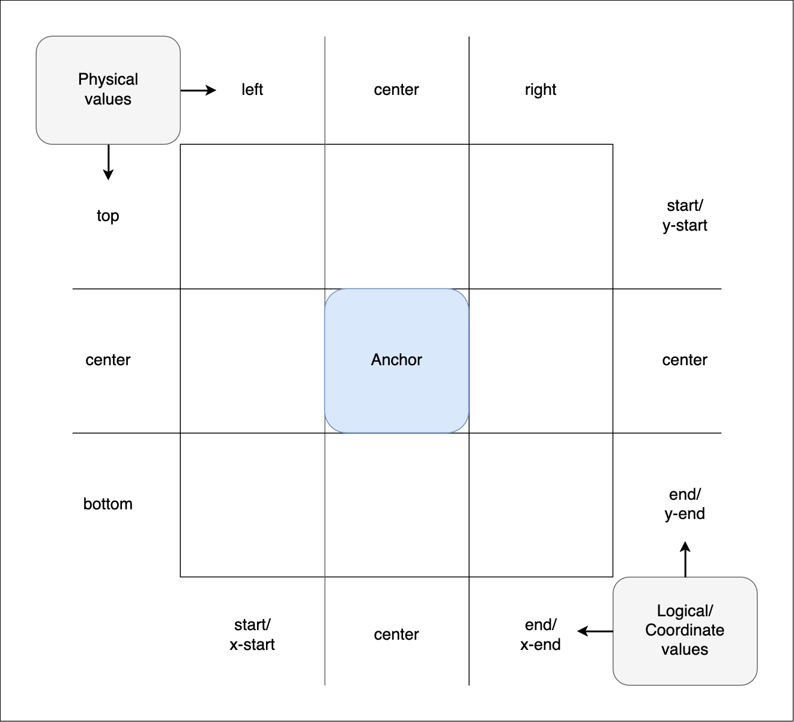

Using CSS anchor positioning
The CSS anchor positioning module defines features that allow you to tether elements together. Elements can be defined as anchor elements and anchor-positioned elements. Anchor-positioned elements can be bound to anchor elements. The anchor-positioned elements can then have their size and position set relative to the size and location of the anchor elements to which they are bound.
CSS anchor positioning also provides CSS-only mechanisms for specifying multiple alternative positions for an anchor-positioned element. For example, if a tooltip is anchored to a form field but the tooltip would otherwise be rendered offscreen in its default position settings, the browser can try rendering it in a different suggested position so it is placed onscreen, or, alternatively, hide it altogether if desired.
This article explains the fundamental anchor positioning concepts, and how to use the module's association, positioning, and sizing features at a basic level. We've included links to reference pages with additional examples and syntax details for each concept discussed below. For information on specifying alternative positions and hiding anchor-positioned elements, see Handling overflow: try fallbacks and conditional hiding.
Fundamental concepts
It's very common to want to tether, or bind, one element to another. For example:
- Error messages that appear alongside form controls.
- Tooltips or infoboxes that pop up next to a UI element to provide more information about it.
- Settings or options dialogs that can be accessed to quickly configure UI elements.
- Drop-down or popover menus that appear next to an associated navigation bar or button.
Modern interfaces frequently call for some content — often reusable and dynamically-generated — to be situated relative to an anchor element. Creating such use cases would be fairly straightforward if the element to tether to (aka the anchor element) was always in the same place in the UI and the tethered element (aka the anchor-positioned element, or just positioned element) could always be placed immediately before or after it in the source order. However, things are rarely that simple.
The location of positioned elements relative to their anchor element needs to be maintained and adjusted as the anchor element moves or otherwise changes configuration (e.g. by scrolling, changing the viewport size, drag and drop, etc.). For example, if an element such as a form field gets close to the edge of the viewport, its tooltip may end up offscreen. Generally, you want to bind the tooltip to its form control and ensure the tooltip is kept fully visible on-screen as long as the form field is visible, automatically moving the tooltip if needed. You may have noticed this as the default behavior in your operating system when you right-click (Ctrl + click) context menus on your desktop or laptop.
Historically, associating an element with another element and dynamically changing a positioned element's location and size based on an anchor's position required JavaScript, which added complexity and performance issues. It also wasn't guaranteed to work in all situations. The features defined in the CSS anchor positioning module enable implementing such use cases performantly and declaratively with CSS (and HTML) instead of JavaScript.
Associating anchor and positioned elements
To associate an element with an anchor, you need to first declare which element is the anchor, and then specify which positioned element(s) to associate with that anchor. This can be done via CSS or via the HTML anchor attribute.
CSS-only method
To declare an element as an anchor with CSS, you need to set an anchor name on it via the anchor-name property. The anchor name needs to be a <dashed-ident>. In this example, we also set the anchor's width to fit-content to get a small square anchor, which better demonstrates the anchoring effect.
.anchor {
anchor-name: --myAnchor;
width: fit-content;
}
Converting an element to an anchor-positioned element requires two steps: It needs to be absolutely or fixed positioned using the position property. The positioned element then has its position-anchor property set to the value of the anchor element's anchor-name property to associate the two together:
.infobox {
position: fixed;
position-anchor: --myAnchor;
}
We'll apply the above CSS to the following HTML:
<div class="anchor">⚓︎</div>
<div class="infobox">
<p>This is an information box.</p>
</div>
This will render as follows:
The anchor and infobox are now associated, but for the moment you'll have to trust us on this. They are not tethered to each other yet — if you were to position the anchor and move it somewhere else on the page, it would move on its own, leaving the infobox in the same place. You'll see the actual tethering in action when we look at positioning elements based on anchor position.
HTML method
To associate a positioned element with an anchor in HTML, you can use the anchor attribute. You need to give the anchor element an id. The anchor attribute is then set on the anchor-positioned element, with a value equal to the id of the anchor element you want to associate it with.
We have done this in the HTML below:
<div class="anchor" id="example-anchor">⚓︎</div>
<div class="infobox" anchor="example-anchor">
<p>This is an information box.</p>
</div>
Elements need to be absolutely or fixed positioned to be associated with anchors, so we give the infobox a position value of fixed:
.infobox {
position: fixed;
}
This gives us the same result that we achieved earlier with CSS. We associated a positioned element with an anchor element using the anchor attribute on the positioned element rather than the anchor element's anchor-name property and the positioned element's position-anchor property.
Note:
The anchor attribute currently has less support than the CSS equivalent. See the anchor attribute compatibility table for more information.
We've associated the two elements, but they are not yet tethered. To tether them together, the positioned element needs to be positioned relative to its anchor, which is done with CSS.
Positioning elements relative to their anchor
As we saw above, associating a positioned element with an anchor is not really much use on its own. Our goal is to place the positioned element relative to its associated anchor element. This is done either by setting a CSS anchor() function value on an inset property, specifying a position-area, or centering the positioned element with the anchor-center placement value.
Note:
The anchor element must be a visible DOM node for the association and positioning to work. If it is hidden (for example via display: none), the positioned element will be positioned relative to its nearest positioned ancestor. We discuss how to hide an anchor-positioned element when its anchor disappears in Conditional hiding using position-visibility.
Using inset properties with anchor() function values
Conventional absolutely and fixed positioned elements are explicitly positioned by setting <length> or <percentage> values on inset properties. With position: absolute, this inset position value is an absolute distance relative to the edges of the nearest positioned ancestor. With position: fixed, the inset position value is an absolute distance relative to the viewport.
CSS anchor positioning changes this paradigm, enabling anchor-positioned elements to be placed relative to the edges of their associated anchor(s). The module defines the anchor() function, which is a valid value for each of the inset properties. When used, the function sets the inset position value as an absolute distance relative to the anchor element by defining the anchor element, the side of the anchor element the positioned element is being positioned relative to, and the distance from that side.
The function components look like this:
anchor(<anchor-name> <anchor-side>, <fallback>)
<anchor-name>-
The
anchor-nameproperty value of the anchor element you want to position the element's side relative to. This is a<dashed-ident>value. If omitted, the element's default anchor is used. This is the anchor referenced in itsposition-anchorproperty, or associated with the element via theanchorHTML attribute.Note: Specifying an
<anchor-name>positions the element relative to that anchor, but does not provide element association. Only theposition-anchorproperty andanchorattributes create the association. While you can position an element's sides relative to multiple anchors by specifying different<anchor-name>values inside differentanchor()functions on the same element, the positioned element is only associated with a single anchor. <anchor-side>-
Specifies the position relative to a side, or sides, of the anchor. Valid values include the
centerof the anchor, physical (top,left, etc.) or logical (start,self-end, etc.) sides of the anchor, or a<percentage>between the start (0%) and end (100%) of the axis of the inset propertyanchor()is set on. If a value is used that is not compatible with the inset property on which theanchor()function is set, the fallback value is used. <fallback>-
A
<length-percentage>defining the distance to use as a fallback value if the element is not absolutely or fixed positioned, if the<anchor-side>value used is not compatible with the inset property on which theanchor()function is set, or if the anchor element doesn't exist.
The return value of the anchor() function is a length value calculated based on the position of the anchor. If you set a length or percentage directly on an anchor-positioned element's inset property, it is positioned as if it were not bound to the anchor element. This is the same behavior seen if the <anchor-side> value is incompatible with the inset property on which it is set and the fallback is used. These two declarations are equivalent:
bottom: anchor(right, 50px);
bottom: 50px;
Both will place the positioned element 50px above the bottom of the element's closest positioned ancestor (if any) or of the initial containing block.
The most common anchor() parameters you'll use will refer to a side of the default anchor. You will also often either add a margin to create spacing between the edge of the anchor and positioned element or use anchor() within a calc() function to add that spacing.
For example, this rule positions the right edge of the positioned element flush to the anchor element's left edge, then adds some margin-left to make some space between the edges:
.positionedElement {
right: anchor(left);
margin-left: 10px;
}
The return value of an anchor() function is a length. This means you can use it within a calc() function. This rule positions the positioned element's logical block end edge 10px from the anchor element's logical block start edge, adding the spacing using the calc() function so we don't need to add a margin:
.positionedElement {
inset-block-end: calc(anchor(start) + 10px);
}
anchor() example
Let's look at an example of anchor() in action. We've used the same HTML as in the previous examples, but with some filler text placed below and above it to cause the content to overflow its container and scroll. We'll also give the anchor element the same anchor-name as in the previous examples:
.anchor {
anchor-name: --myAnchor;
}
The infobox is associated with the anchor via the anchor name and given fixed positioning. By including the inset-block-start and inset-inline-start properties (which are equivalent to top and left in horizontal left-to-right writing modes) we have tethered it to the anchor. We add a margin to the infobox to add space between the positioned element and its anchor:
.infobox {
position-anchor: --myAnchor;
position: fixed;
inset-block-start: anchor(end);
inset-inline-start: anchor(self-end);
margin: 5px 0 0 5px;
}
Let's look at the inset property positioning declarations in more detail:
inset-block-start: anchor(end): This sets the positioned element's block start edge to the anchor's block end edge, calculated using theanchor(end)function.inset-inline-start: anchor(self-end): This sets the positioned element's inline start edge to the anchor's inline end edge, calculated using theanchor(self-end)function.
This gives us the following result:
The positioned element is 5px below and 5px to the right of the anchor element. If you scroll the document up and down, the positioned element maintains its position relative to the anchor element — it is fixed to the anchor element, not the viewport.
Setting a position-area
The position-area property provides an alternative to the anchor() function for positioning elements relative to anchors. The position-area property works on the concept of a 3x3 grid of tiles, with the anchor element being the center tile. The position-area property can be used to position the anchor positioned element in any of the nine tiles, or have it span across two or three tiles.

The grid tiles are broken up into rows and columns:
- The three rows are represented by the physical values
top,center, andbottom. They also have logical equivalents such asstart,center, andend, and coordinate equivalents such asy-start,center, andy-end. - The three columns are represented by the physical values
left,center, andright. They also have logical equivalents such asstart,center, andend, and coordinate equivalents such asx-start,center, andx-end.
The dimensions of the center tile are defined by the containing block of the anchor element, while the distance between the center tile and the grid's outer edge is defined by the positioned element's containing block.
position-area property values are composed of one or two values based on the row and column values described above, with spanning options available to define the region of the grid where the element should positioned.
For example:
You can specify two values to place the positioned element in a specific grid square. For example:
top left(logical equivalentstart start) will place the positioned element in the top-left square.bottom center(logical equivalentend center) will place the positioned element in the bottom center square.
You can specify a row or column value plus a span-* value. The first value specifies the row or column to place the positioned element in, placing it initially in the center, and the other one specifies the amount of that column to span. For example:
top span-leftcauses the positioned element to be placed in the top row, and span across the center and left tiles of that row.y-end span-x-endcauses the positioned element to be placed in the end of the y column, and span across the center and x-end tiles of that column.block-end span-allcauses the positioned element to be placed in the block end row, and span across the inline-start, center, and inline-end tiles of that row.
If you only specify one value, the effect is different depending on which value is set:
- A physical side value (
top,bottom,left, orright) or coordinate value (y-start,y-end,x-start,x-end) acts as if the other value isspan-all. For example,topgives the same effect astop span-all. - A logical side value (
startorend) acts as if the other value is set to the same value; for examplestartgives the same effect asstart start. - A value of
centeracts as if both values are set tocenter(so,center center).
Note:
See the <position-area> value reference page for a detailed description of all the available values. Mixing a logical value with a physical value will invalidate the declaration.
Let's demonstrate some of these values; this example uses the same HTML and base CSS styes as the previous example, except that we've included a <select> element to enable changing the positioned element's position-area value.
The infobox is given fixed positioning and associated with the anchor using CSS. When loaded, it is set to be tethered to the anchor with position-area: top;, which causes it to be positioned at the top of the position-area grid. This will be overridden once you select different values from the <select> menu.
.infobox {
position: fixed;
position-anchor: --myAnchor;
position-area: top;
}
We also include a short script to apply new position-area values chosen from the <select> menu to the infobox:
const infobox = document.querySelector(".infobox");
const selectElem = document.querySelector("select");
selectElem.addEventListener("change", () => {
const area = selectElem.value;
// Set the position-area to the value chosen in the select box
infobox.style.positionArea = area;
});
Try selecting new position-area values from the <select> menu to see the effect they have on the position of the infobox:
Positioned element width
In the above example, we did not explicitly size the positioned element in either dimension. We deliberately omitted sizing to allow you to observe the behavior this causes.
When a positioned element is placed into position-area grid cells without explicit sizing, it aligns with the grid area specified and behaves as if width were set to max-content. It is sized according to its containing block size, which is the width of its content. This size was imposed by setting position: fixed. Auto-sized absolutely and fixed-positioned elements are automatically sized, stretching as wide as needed to fit the text content, while constrained by the edge of the viewport. In this case, when placed on the left side of the grid with any left or inline-start value, the text wraps. If the anchored element's max-content size is narrower or shorter than its anchor, they won't grow to match the size of the anchor.
If the positioned element is centered vertically, such as with position-area: bottom center, it will align with the grid cell specified and the width will be the same as the anchor element. In this case, its minimum height is the anchor element's containing block size. It will not overflow, as the min-width is min-content, meaning it will be at least as wide as its longest word.
Centering on the anchor using anchor-center
While you can center the anchor-positioned element using position-area's center values, inset properties combined with the anchor() function provide more control over the exact position. CSS anchor positioning provides a way to center an anchor-positioned element relative to its anchor when inset properties, rather than position-area, are used to tether.
The properties justify-self, align-self, justify-items, and align-items (and their place-items and place-self shorthands) exist to allow developers to easily align elements in the inline or block direction inside various layout systems, for example along the main or cross axis in the case of flex children. CSS anchor positioning provides an additional value for these properties, anchor-center, which aligns a positioned element with the center of its default anchor.
This example uses the same HTML and base CSS as the previous example. The infobox is given fixed positioning and tethered to the anchor's bottom edge. justify-self: anchor-center is then used to make sure it is centered horizontally on the anchor's center:
.infobox {
position: fixed;
position-anchor: --myAnchor;
top: calc(anchor(bottom) + 5px);
justify-self: anchor-center;
}
This centers the anchor-positioned element at the bottom of its anchor:
Sizing elements based on anchor size
As well as positioning an element relative to its anchor's position, you can also size an element relative to its anchor's size using the anchor-size() function within a sizing property value.
Sizing properties that can accept an anchor-size() value include:
widthheightmin-widthmin-heightmax-widthmax-heightblock-sizeinline-sizemin-block-sizemin-inline-sizemax-block-sizemax-inline-size
anchor-size() functions resolve to <length> values. Their syntax looks like this:
anchor-size(<anchor-name> <anchor-size>, <length-percentage>)
<anchor-name>-
The
<dashed-ident>name set as the value of theanchor-nameproperty of the anchor element you want to size the element relative to. If omitted, the element's default anchor, which is the anchor referenced in theposition-anchorproperty, is used. <anchor-size>-
Specifies the dimension of the anchor element that the positioned element will be sized relative to. This can be expressed using physical (
widthorheight) or logical (inline,block,self-inline, orself-block) values. <length-percentage>-
Specifies the size to use as a fallback value if the element is not absolutely or fixed positioned, or the anchor element doesn't exist.
The most common anchor-size() functions you'll use will just refer to a dimension of the default anchor. You can also use them inside calc() functions, to modify the size applied to the positioned element.
For example, this rule sizes the positioned element's width equal to the default anchor element's width:
.elem {
width: anchor-size(width);
}
This rule sizes the positioned element's inline size to 4 times the anchor element's inline size, with the multiplication being done inside a calc() function:
.elem {
inline-size: calc(anchor-size(self-inline) * 4);
}
Let's look at an example. The HTML and base CSS are the same as in the previous examples, except that the anchor element is given a tabindex="0" attribute to make it focusable. The infobox is given fixed positioning and associated with the anchor in the same way as before. However, this time around we tether it to the right of the anchor using a position-area, and give it a width five times the width of the anchor's width:
.infobox {
position: fixed;
position-anchor: --myAnchor;
position-area: right;
margin-left: 5px;
width: calc(anchor-size(width) * 5);
}
In addition, we increase the anchor element's width on :hover and :focus, and give it a transition so that it animates when the state changes.
.anchor {
text-align: center;
width: 30px;
transition: 1s width;
}
.anchor:hover,
.anchor:focus {
width: 50px;
}
Hover over or tab to the anchor element — the positioned element grows as the anchor grows, demonstrating that the anchor-positioned element's size is relative to its anchor:
Other uses of anchor-size()
You can also use anchor-size() in physical and logical inset and margin properties. The sections below explore these uses in more detail, before providing a usage example.
Setting element position based on anchor size
You can use the anchor-size() function within an inset property value to position elements based on their anchor element's size, for example:
left: anchor-size(width);
inset-inline-end: anchor-size(--myAnchor height, 100px);
This doesn't position an element relative to the position of its anchor like the anchor() function or position-area property do (see Positioning elements relative to their anchor, above); the element won't change its position when its anchor does. Instead, the element will be positioned according to the normal rules of absolute or fixed positioning.
This can be useful in some situations. For example, if your anchor element can only move vertically, and always remains next to the edge of its closest positioned ancestor horizontally, you could use left: anchor-size(width) to cause the anchor-positioned element to always be positioned to the right of its anchor, even if the anchor width changes.
Setting element margin based on anchor size
You can use the anchor-size() function within a margin-* property value to set element margins based on their anchor element's size, for example:
margin-left: calc(anchor-size(width) / 4);
margin-block-start: anchor-size(--myAnchor self-block, 20px);
This can be useful in cases where you want to set an anchor-positioned element's margin to be always equal to the same percentage of the anchor element's width, even when the width changes.
anchor-size() position and margin example
Let's look at an example where we set an anchor-positioned element's margin and position relative to the anchor element's width.
In the HTML, we specify two <div> elements, one anchor element and one infobox element that we'll position relative to the anchor. We give the anchor element a tabindex attribute so that it can be focused via the keyboard. We also include filler text to make the <body> tall enough to require scrolling, but this has been hidden for the sake of brevity.
<div class="anchor" tabindex="0">⚓︎</div>
<div class="infobox">
<p>Infobox.</p>
</div>
In the CSS, we first declare the anchor <div> as an anchor element by giving it an anchor-name. The positioned element has its position property set to absolute, and is associated with the anchor element via its position-anchor property. We also set absolute height and width dimensions on the anchor and infobox, and include a transition on the anchor so that width changes are smoothly animated when its state changes:
.anchor {
anchor-name: --myAnchor;
width: 100px;
height: 100px;
transition: 1s all;
}
.infobox {
position-anchor: --myAnchor;
position: absolute;
height: 100px;
width: 100px;
}
Now onto the most interesting part. Here we set the anchor's width to 300px when it is hovered or focused. We then set the infobox's:
topvalue toanchor(top). This causes the top of the infobox to always stay in line with the top of the anchor.leftvalue toanchor-size(width). This causes the left of the infobox to be positioned the specified distance away from the left edge of its nearest positioned ancestor. In this case, the specified distance is equal to the anchor element's width and the nearest positioned ancestor is the<body>element, so the infobox appears to the right of the anchor.margin-leftvalue tocalc(anchor-size(width)/4). This cases the infobox to always have a left margin separating it and the anchor, equal to a quarter of the anchor's width.
.anchor:hover,
.anchor:focus {
width: 300px;
}
.infobox {
top: anchor(top);
left: anchor-size(width);
margin-left: calc(anchor-size(width) / 4);
}
The rendered result is as follows:
Try tabbing to the anchor or hovering over it with the mouse pointer, and note how the infobox's position and left margin grow in proportion to the anchor element's width.